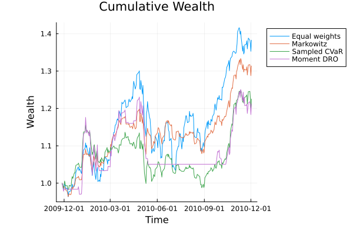

Model Assessment
This example compares formulations with a rolling (walk-forward) backtest. Each day, every strategy only sees the past returns, chooses a portfolio, and is then evaluated on the realized returns of that day. The assessment uses what the backtest records:
- the state recorders (
:wealth,:returnsand:decisions) give the realized performance (cumulative wealth, risk, drawdown and turnover); - the optimization recorder stores the value of each term of the formulation (for example the predicted risk) on each day. Comparing it with the realized risk shows whether the model is calibrated.
using Clarabel
using Distributions
using PortfolioOpt: DenseAxisArray # JuMP container used by the recorders
using PortfolioOpt
using PortfolioOpt.TestUtils
using MarketData # test data (loads the TimeSeries integration)
using Statistics
using UUIDsData
prices = get_test_data();
returns_series = percentchange(prices);
numD, numA = size(returns_series) # D: Days A: Assets
SOLVER = optimizer_with_attributes(Clarabel.Optimizer, "verbose" => false)
lookback = 60 # days used to estimate the distribution of the returns
date_range = timestamp(returns_series)[(lookback + 1):end];255-element Vector{Dates.Date}:
2009-11-27
2009-11-30
2009-12-01
2009-12-02
2009-12-03
2009-12-04
2009-12-07
2009-12-08
2009-12-09
2009-12-10
⋮
2010-11-18
2010-11-19
2010-11-22
2010-11-23
2010-11-24
2010-11-26
2010-11-29
2010-11-30
2010-12-01Strategies
Each strategy maps the past returns (and the current wealth, since the decision is the money invested in each asset) to a PortfolioFormulation. Risk limits are a fraction of the wealth. The terms used for the calibration check have fixed identifiers so that they can be recorded.
const RISK_UID = uuid1()
const OBJECTIVE_UID = uuid1()
# Markowitz: maximize the expected return with the daily standard deviation limited to 1%
function markowitz(past_returns, wealth)
d = forecast(EmpiricalGaussian(lookback), past_returns)
return PortfolioFormulation(
MAX_SENSE,
ObjectiveTerm(ExpectedReturn(d), 1.0, OBJECTIVE_UID),
RiskConstraint(SqrtVariance(d), LessThan(0.01 * wealth), RISK_UID),
)
end
# Sampled CVaR: maximize the expected return with the average of the 5% worst days above -2%
function sampled_cvar(past_returns, wealth)
s = forecast(EmpiricalSamples(lookback), past_returns)
return PortfolioFormulation(
MAX_SENSE,
ObjectiveTerm(ExpectedReturn(s), 1.0, OBJECTIVE_UID),
RiskConstraint(
ConditionalExpectedReturn(s; α=0.05), GreaterThan(-0.02 * wealth), RISK_UID
),
)
end
# Distributionally robust: maximize the worst case expected return over a moment ambiguity set
function moment_dro(past_returns, wealth)
d = forecast(EmpiricalGaussian(lookback), past_returns)
return PortfolioFormulation(
MAX_SENSE,
ObjectiveTerm(ExpectedReturn(MomentUncertainty(d, 0.05, 1.3)), 1.0, OBJECTIVE_UID),
)
end
# Benchmark: equal weights (no formulation)
equal_weights(past_returns, wealth) = nothing
strategies = [
"Equal weights" => equal_weights,
"Markowitz" => markowitz,
"Sampled CVaR" => sampled_cvar,
"Moment DRO" => moment_dro,
];4-element Vector{Pair{String, Function}}:
"Equal weights" => Main.equal_weights
"Markowitz" => Main.markowitz
"Sampled CVaR" => Main.sampled_cvar
"Moment DRO" => Main.moment_droBacktest
function backtest(strategy)
optimization_recorder = DenseAxisArray(
fill(NaN, length(date_range), 2), date_range, [OBJECTIVE_UID, RISK_UID]
)
recorders, _ = sequential_backtest_market(
VolumeMarketHistory(returns_series),
date_range;
optimization_recorder=optimization_recorder,
) do market, past_returns, ext
wealth = market_budget(market)
formulation = strategy(past_returns, wealth)
if isnothing(formulation)
change_bids!(market, fill(wealth / numA, numA))
return nothing
end
# the values of the terms (keyed by their uid) are stored in the optimization recorder
return change_bids!(market, formulation, SOLVER; record_measures=true)
end
return recorders, optimization_recorder
end
results = Dict(name => backtest(strategy) for (name, strategy) in strategies);Dict{String, Tuple{Dict{Symbol, StateRecorder}, JuMP.Containers.DenseAxisArray{Float64, 2, Tuple{Vector{Dates.Date}, Vector{Base.UUID}}, Tuple{JuMP.Containers._AxisLookup{Dict{Dates.Date, Int64}}, JuMP.Containers._AxisLookup{Dict{Base.UUID, Int64}}}}}} with 4 entries:
"Moment DRO" => (Dict(:decisions=>DecisionRecorder{Float64}(2-dimensional …
"Markowitz" => (Dict(:decisions=>DecisionRecorder{Float64}(2-dimensional …
"Equal weights" => (Dict(:decisions=>DecisionRecorder{Float64}(2-dimensional …
"Sampled CVaR" => (Dict(:decisions=>DecisionRecorder{Float64}(2-dimensional …Performance
Metrics computed from the state recorders (daily returns, not annualized):
- mean and standard deviation of the realized daily returns, and their ratio (Sharpe ratio with a zero risk free rate);
CVaR 5%: average of the 5% worst realized days;- maximum drawdown of the wealth;
- turnover: average daily sum of the absolute changes of the target portfolio weights (the drift of the prices between rebalances is ignored, so equal weights has zero turnover).
function assessment(recorders)
r = get_records(recorders[:returns]).data
wealth = get_records(recorders[:wealth]).data
decisions = get_records(recorders[:decisions]).data
weights = decisions ./ wealth[1:(end - 1)]
worst = r[r .<= quantile(r, 0.05)]
return (
final_wealth=wealth[end],
mean=mean(r),
std=std(r),
sharpe=mean(r) / std(r),
cvar_5=-mean(worst),
max_drawdown=maximum(1 .- wealth ./ accumulate(max, wealth)),
turnover=mean(sum(abs.(diff(weights; dims=1)); dims=2)),
)
end
metrics = [name => assessment(first(results[name])) for (name, _) in strategies]
for (name, m) in metrics
println(
rpad(name, 15), join(["$(k) = $(round(v; digits=4))" for (k, v) in pairs(m)], ", ")
)
endEqual weights final_wealth = 1.3827, mean = 0.0014, std = 0.0154, sharpe = 0.0904, cvar_5 = 0.0366, max_drawdown = 0.2051, turnover = 0.0
Markowitz final_wealth = 1.3137, mean = 0.0011, std = 0.0101, sharpe = 0.1113, cvar_5 = 0.0224, max_drawdown = 0.1004, turnover = 0.1021
Sampled CVaR final_wealth = 1.2252, mean = 0.0009, std = 0.011, sharpe = 0.0776, cvar_5 = 0.0256, max_drawdown = 0.1457, turnover = 0.1675
Moment DRO final_wealth = 1.2122, mean = 0.0009, std = 0.014, sharpe = 0.061, cvar_5 = 0.0347, max_drawdown = 0.1465, turnover = 0.1532Calibration: predicted versus realized risk
The optimization recorder stores the value of the risk constraint on each day, in money. For Markowitz it is the predicted standard deviation of the next day's profit, and for the sampled CVaR it is the predicted conditional expected return of the 5% worst days. Dividing it by the wealth gives the predicted risk of the portfolio return, which is compared with the realized one. When the realized risk is above the prediction, the estimates are too optimistic and the risk limit is breached out of sample.
function predicted_risk(name)
recorders, optimization_recorder = results[name]
wealth = get_records(recorders[:wealth]).data[1:(end - 1)]
predicted = optimization_recorder[:, RISK_UID].data ./ wealth
return mean(filter(!isnan, predicted))
end
markowitz_returns = get_records(first(results["Markowitz"])[:returns]).data
println(
"Markowitz predicted std = ",
round(predicted_risk("Markowitz"); digits=4),
", realized std = ",
round(std(markowitz_returns); digits=4),
)
cvar_returns = get_records(first(results["Sampled CVaR"])[:returns]).data
println(
"Sampled CVaR predicted CVaR = ",
round(-predicted_risk("Sampled CVaR"); digits=4),
", realized CVaR = ",
round(-mean(cvar_returns[cvar_returns .<= quantile(cvar_returns, 0.05)]); digits=4),
)Markowitz predicted std = 0.0099, realized std = 0.0101
Sampled CVaR predicted CVaR = 0.02, realized CVaR = 0.0256Cumulative wealth
using Plots
using Plots.PlotMeasures
plt = plot(;
title="Cumulative Wealth",
xlabel="Time",
ylabel="Wealth",
legend=:outertopright,
left_margin=10mm,
);
for (name, _) in strategies
wealth = get_records(first(results[name])[:wealth])
plot!(plt, axes(wealth, 1), wealth.data; label=name)
end
plt
In this period the Markowitz prediction of the daily standard deviation is close to the realized one, while the 60 day empirical CVaR underestimates the realized tail losses. The moment based DRO formulation has no explicit risk limit: risk only enters through the worst case mean, and its realized volatility falls between Markowitz and equal weights.
This page was generated using Literate.jl.